항공기체정비기능사 (2013-04-14 기출문제)
1과목: 비행원리
1. 그림과 같은 날개골 주위의 초음속 흐름에서 ⓐ 와 같이 발생하는 것은?
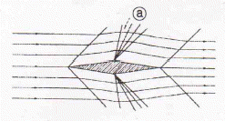
- 경사 충격파
- 팽창파
- 수직 충격파
- 초음파
(정답률: 72%)

2. 조종간과 승강키가 연결장치에 의해 연결되었을 때 조종력을 구하기 위한 식은? (단, K : 조종계통의 기계적 장치에 의한 이득, He : 승강키 힌지모멘트 이다.)
- He/K
- K2/He
- K ∙ He
- K+He
(정답률: 76%)
3. 버펫트(Buffet)에 대한 설명으로 옳은 것은?
- 동체에 작용하여 전진성능을 향상시킨다.
- 주날개에 작용하여 상승성능을 좋게 한다.
- 일정한 강하 속도 및 옆놀이 각속도를 유지하면서 강하하는 현상이다.
- 흐름의 떨어짐에 대한 후류의 영향으로 날개나 꼬리 날개를 진동시켜 발생하는 현상이다.
(정답률: 84%)
4. 비행기가 착륙시 활주로 위의 일정한 높이에서 실속속도 이상의 속도로 강하하는데 그 이유로 옳은 것은?
- 주날개에서 발생하는 임계항력을 증가시키기 위해
- 꼬리날개에서 발생하는 유도항력을 일정하게 유지하기 위해
- 더욱 빠른 실속을 유도하여 착륙시간을 단축시키기 위해
- 지면 부근의 돌풍에 의한 비행기의 자세 교란을 방지하기 위해
(정답률: 67%)
5. 대류권과 성층권의 경계면인 대류권계면의 특징으로 틀린 것은?
- 공기가 희박하다.
- 성층권계면보다 기온이 낮다.
- 제트기의 순항고도로 적합하다.
- 구름이 많고 대기가 불안정하다.
(정답률: 67%)
6. 다음 중 최대 캠버가 큰 날개골은?
- NACA 0012
- NACA 4415
- NACA 0018
- NACA 23015
(정답률: 72%)
7. 날개 면적이 80m2, 무게가 7500kgf 인 비행기가 밀도 1/8kgfㆍs2/m4 인 해면고도를 수평 비행할 때, 비행 속도는 몇 m/s 인가? (단, 양력계수는 0.15 이다.)
- 80
- 100
- 120
- 150
(정답률: 48%)
8. 공기 중에서 50kgf 항력을 받으며 면적이 8m2 인 물체가 일정한 속도 10 m/s 로 떨어지고 있을 때 물체가 갖는 항력계수는 얼마인가? (단, 공기의 밀도는 0.1kgfㆍs2/m4 이다.)
- 1.0
- 1.15
- 1.25
- 1.75
(정답률: 70%)
9. 비행체 주위의 압력 분포를 나타내는 압력계수를 옳게 나타낸 것은?
- 정압의차 / 동압
- 정압의차 / 전압
- 동압 / 정압의차
- 전압 / 정압의차
(정답률: 50%)
10. 헬리콥터의 동시피치제어간(Collective pitch control lever)을 위로 움직이면 어떤 현상이 발생하는가?
- 회전날개의 피치가 증가한다.
- 회전날개의 피치가 감소한다,
- 헬리콥터의 고도가 낮아진다.
- 회전날개가 플래핑을 감소시킨다.
(정답률: 75%)
11. 항공이 기체의 기준축을 중심으로 발생하는 모멘트의 종류가 아닌 것은?
- 옆놀이 모멘트
- 빗놀이 모멘트
- 축놀이 모멘트
- 키놀이 모멘트
(정답률: 88%)
12. 비행기가 정적중립(Static neutral)인 상태일 때를 가장 옳게 설명한 것은?
- 받음각이 변화된 후 원래의 평형상태로 돌아간다.
- 조종에 대해 과도하게 민감하며, 교란을 받게 되면 평형상태로 되돌아오지 않는다.
- 비행기의 자세와 속도를 변화시켜 평형을 유지시킨다.
- 반대 방향으로의 조종력이 작용되면 원래의 평형상태로 되돌아간다.
(정답률: 51%)
13. 헬리콥터의 날개에 장착된 장치로 좌우 불균형 상태인 양력의 비대칭현상을 방지하기 위한 것은?
- 페더링 축
- 회전 경사판
- 플래핑 힌지
- 주기적 피치 제어간
(정답률: 52%)
14. 그림같이 각각의 1회전당 이동거리를 갖는 (a), (b) 두 프로펠러를 비교한 설명으로 옳은 것은?
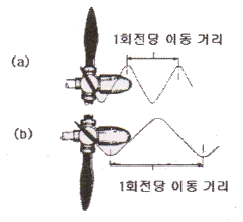
- (a)프로펠러의 피치각이 (b)프로펠러보다 작다.
- (a)프로펠러의 피치각이 (b)프로펠러보다 크다.
- 거리와 상관없이 (a)프로펠러가 (b)프로펠러보다 회전 속도가 항상 빠르다.
- 동일한 회전속도로 구동하는 데 있어 (a)프로펠러에 더 많은 동력이 요구된다.
(정답률: 64%)
15. 착륙접지 후 작동하여 양력을 감소시키고 항력을 증가시켜 바퀴 브레이크의 제동 효과를 높여주기 위해 사용하는 것은?
- 플랩
- 역추진 장치
- 피치 암
- 지상 스포일러
(정답률: 68%)
16. 고장의 자료와 품질에 관한 자료를 감시, 분석하여 문제점을 발견하고, 이것에 대한 처리 대책을 강구하는 정비방식은?
- 공장 정비관리
- 예방 점검관리
- 정시 정비관리
- 신뢰성 정비관리
(정답률: 48%)
17. 그림과 같은 항공기용 조종 케이블의 단자 연결법은?
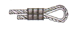
- 스웨이징법
- 랩솔더법
- 니코프레스법
- 5단엮기법
(정답률: 63%)
18. 리벳의 치수 결정에 대한 설명으로 틀린 것은?
- 성형된 리벳 머리의 두께는 리벳 지름의 1/2 정도가 적절하다.
- 리벳 머리를 성형하기 위해 리벳이 판재위로 돌출되는 길이는 리벳 지름의 1.5배 정도이다.
- 리벳 머리의 지름은 리벳 지름의 1.5배 정도가 적절하다.
- 리벳의 지름은 접합할 판재 중 두꺼운 쪽 판재 두께의 2배가 적당하다.
(정답률: 64%)
19. 너트나 볼트 헤드까지 닿을 수 있는 거리가 굴곡이 있는 장소에 사용되는 그림과 같은 공구의 명칭은?
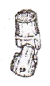
- 알렌 렌치
- 익스텐션 바
- 래칫 핸들
- 플렉시블 소켓
(정답률: 80%)
20. 정비의 개념에 대한 설명으로 틀린 것은?
- 항공기의 감항성을 유지하기 위한 행위이다.
- 사용 중 발생한 고장이나 불량상태를 회복시키는 행위이다.
- 고장의 발생요인을 미리 발견하여 제거함으로서 완전한 기능을 유지시키는 행위이다.
- 점검 및 검사는 포함되지만 각종 유류를 보급하는 행위는 대상에서 제외된다.
(정답률: 77%)
2과목: 항공기정비
21. 비파괴 검사의 종류와 약어의 연결이 틀린 것은?
- 침투탐상검사 - Penetration Testing : PT
- 초음파탐상검사 - Sound wave Testing : ST
- 방사선투과검사 - Radio graphic Testing :RT
- 자분탐상검사 - Magnetic Particle Testing : MT
(정답률: 60%)
22. 항공기에 작동유를 보급할 때 주의사항으로 가장 옳은 것은?
- 한번 사용한 작동유는 정제하여 재 사용한다.
- 보급을 하고 남는 작동유는 다음번 보급에 가능한 한 사용하지 않는다.
- 한번 작동유를 보급하면 작동유를 소진하기 전까진 다시 보급할 필요가 없다.
- 작동유는 2종류 이상의 작동유를 혼합해서 사용한다.
(정답률: 76%)
23. 다음 중 토크값의 적용 방법에 관한 설명으로 옳은 것은?
- 일반적으로 볼트 쪽에서 적용한다.
- 연장공구를 사용시 토크값의 조절은 필요하지 않다.
- 너트 쪽에서 토크값을 적용할 상황에는 토크값을 기준보다 작게 해야 한다.
- 동일한 부위라도 항공기 제작회사별로 다르게 적용된다.
(정답률: 66%)
24. 다음 ( )안에 들어갈 말이 순서대로 옳게 짝지어진 것은?
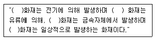
- B급, D급, C급, A급
- C급, B급, A급, D급
- C급, B급, D급, A급
- B급, C급, D급, A급
(정답률: 89%)
25. 최소 측정값이 1/50mm 인 그림과 같은 버니어캘리퍼스 에서 * 표시된 곳이 일치하였다면 측정값은 몇 mm 인가?
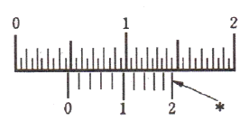
- 4.52
- 4.70
- 4.72
- 4.75
(정답률: 49%)
26. 알루미늄합금의 부식을 방지하기 위하여 표면에 순수 알루미늄을 코팅할 때 사용하는 방법은?
- 침탄
- 압출
- 압연
- 질화
(정답률: 54%)
27. "Word that is used to describe the lifting of aircraft in order to perform aircraft maintenance or to measure aircraft weight" 문장이 뜻하는 작업은?
- 잭 작업
- 지상 유도
- 견인 작업
- 계류 작업
(정답률: 64%)
28. 화학적 피막 처리의 하나인 알로다인 처리에 사용되는 용제들 중 암적색 용재로 알루미늄 합금으로 된 날개 구조재의 안쪽과 바깥쪽의 도장 작업을 하기 전에 표피의 전 처리 작업으로 활용되는 것은?
- 알로다인 600
- 알로다인 1000
- 알로다인 1200
- 알로다인 2000
(정답률: 55%)
29. 볼트의 부품기호가 AN3DD5A 로 표시되어 있다면 AN"3"이 의미하는 것은?
- 볼트 길이가 3/8 in
- 볼트 직경이 3/8 in
- 볼트 길이가 3/16 in
- 볼트 직경이 3/16 in
(정답률: 45%)
30. 항공기의 잭 작업 시 잭 포인트에 설치하여야 할 작업공구를 무엇이라고 하는가?
- 촉(Chock)
- 잭 패드(Jack pad)
- 응력 패널(Stress panel)
- 계류 로프(Tie-down rope)
(정답률: 87%)
31. 다음 중 기관정지를 지시하는 수신호는?
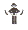
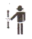
(정답률: 86%)
32. 다음 중 항공기가 격납고내에 있는 동안이나 연료의 급유와 배유작업 및 항공기의 정비작업 중에 반드시 행하여야 할 사항은?
- 받침대의 점검
- 접지
- 견인장비의 점검
- 전기기기의 점검
(정답률: 84%)
33. 다음 중 육안 검사로 찾아 낼 수 있는 결함이 아닌 것은?
- 구부러짐
- 부식
- 내부 균열
- 찍힘
(정답률: 89%)
34. 다음 ( )안에 알맞은 용어는?
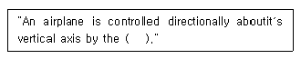
- flap
- elevator
- rudder
- ailerons
(정답률: 59%)
35. 다음 중 스냅 링(Snap ring)과 같은 종류를 벌려 줄 때 사용하는 공구는?
- External ring plier
- Connector ring plier
- Internal ring plier
- Combination ring plier
(정답률: 61%)
36. 헬리콥터의 꼬리회전날개에 대한 설명으로 틀린 것은?
- 플래핑과 리드래그 운동이 가능하다.
- 깃과 요크 및 피치변환장치로 구성된다.
- 테일붐과 파일론의 구조에 지지되어 있다.
- 방향 안전성을 유지하기 위해 피치각을 반대로 변화 시킬 수 있다.
(정답률: 54%)
37. 항공기에서 나셀(Nacelle)에 대한 설명이 아닌 것은?
- 기관을 둘러 싼 부분으로 유선형으로 제작된다.
- 기관의 냉각과 연소에 필요한 흡기구와 배기구가 있다.
- 외피, 카울링, 구조부재, 방화벽 등으로 구성되어 있다.
- 기관 주위를 둘러싼 덮개를 말하며 정비나 점검을 쉽게 하도록 열고 닫는 부분을 말한다.
(정답률: 51%)
38. T형 꼬리날개에 대한 설명으로 틀린 것은?
- 꼬리날개의 공기 흐름이 좋고, 진동이 작다.
- 수직 꼬리날개 상단에 수평 꼬리날개가 부착되어 있다.
- 동체 후류의 영향을 받지 않아 꼬리 날개 성능이 좋다.
- 1개의 날개가 수평 꼬리날개와 수직 꼬리날개를 겸하고 있다.
(정답률: 51%)
39. 항공기에서 2차 조종계통에 속하는 조종면은?
- 방향키(Rudder)
- 슬랫(Slat)
- 승강키(Elevator)
- 도움날개(Aileron)
(정답률: 84%)
40. 물체에 작용하는 외력에 저항하는 단위 면적당 내력의 크기를 무엇이라 하는가?
- 응력
- 압축력
- 전단력
- 인장력
(정답률: 78%)
3과목: 항공기체
41. 페일세이프(fail-safe)구조의 가장 큰 특성은?
- 영구적으로 안전한다.
- 하중을 견디는 구조물의 무게가 가벼워진다.
- 하중을 담당하는 구조물은 하나로 되어 있다.
- 구조의 일부분이 파괴되어도 다른 구조부분이 하중을 지지한다.
(정답률: 84%)
42. Al-Cu-Ni-Mg 합금으로 내열성이 좋아 공량 실린더헤드, 피스톤 등에 사용되는 합금은?
- Y합금
- 두랄루민
- 실루민
- 마그네슘
(정답률: 60%)
43. 알루미늄 합금에 대한 특성이 아닌 것은?
- 가공성이 좋다.
- 상온에서 기계적 성질이 좋다.
- 시효경화가 없어 전연성이 좋다.
- 적절히 처리하면 내식성이 좋다.
(정답률: 77%)
44. 착륙시 항공이 무게가 지면에 가해지는 앞ㆍ뒷바퀴의 달라진 하중을 균등하게 작용하도록 하는 장치는?
- 트러니언(Trunnion)
- 트럭 빔(Truck beam)
- 토션링트(Torsion link)
- 제동평형로드(Breake equalizer rod)
(정답률: 54%)
45. 일반적으로 항공기의 구조 재료로 많이 사용되는 것은?
- 주강
- 티탄합금
- 알루미늄함금
- 유리섬유
(정답률: 79%)
46. 그림과 같은 응력 변형률 곡선에서 항복점은?
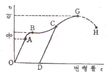
- A
- B
- G
- H
(정답률: 63%)
47. 항공기 결함 보고를 위한 스케치에서 항공기의 방향 표시를 할 때 “앞에서 뒤쪽을 쳐본다”를 의미하는 표시는?
- LOOKING INBD
- LOOKING OUT
- LOOKING AFT
- LOOKING FWD
(정답률: 63%)
48. 헬리콥터의 트랜스미션의 역할과 기능에 대한 설명으로 틀린 것은?
- 기관출력을 감소시켜 회전날개에 전달한다.
- 오토로테이션 시 기관과의 연결을 차단한다.
- 유압펌프나 발전기 등의 액서사리를 구동한다.
- 시위방향으로 리드래그 운동을 하도록 허용한다.
(정답률: 39%)
49. 헬리콥터의 스키드 기어형 착륙장치에서 스키드 슈(Skid shoe)의 주된 사용 목적은?
- 회전날개의 진동을 줄이기 위해
- 스키드의 부식과 손상의 방지를 위해
- 스키드가 지상에 정확히 닿게 하기 위해
- 휠(Wheel)을 스키드에 장착할 수 있게 하기 위해
(정답률: 68%)
50. 2×2 in 인 정사각형 단면봉에 1000lb 의 인장하중을 사한다면 이 봉에 작용하는 응력은 몇 lb/in2 인가?
- 100
- 125
- 250
- 500
(정답률: 71%)
51. 그림과 같이 두 가지 이상의 서로 다른 재료를 서로 겹겹이 붙이는 형태의 혼합 복합 재료 형식을 무엇이라고 하는가?
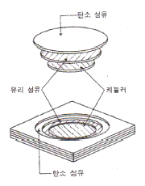
- 인터플라이 혼합재
- 샌드위치 구조재
- 인트라플라이 혼합재
- 선택적 배치 재료
(정답률: 52%)
52. 응력 외피형 날개 구조에서 날개의 휨 강도나 비틀림 강도를 증가시켜주는 역할을 하는 길이방향으로 설치된 구조 부재는?
- 세로대(Longeron)
- 리브(Rib)
- 스트링어(Stringer)
- 외피(Skin)
(정답률: 61%)
53. 항공기의 손상 상태를 도시한 도면에 대한 설명으로 틀린 것은?
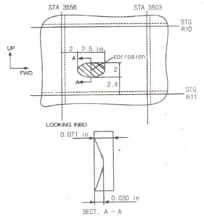
- 손상 부위의 깊이는 0.030 in 이다.
- 손상 부위의 장축길이는 2.5 in 이다.
- 손상 부위는 스테이션 3556번과 3503번 사이에 있다.
- 손상 부위는 스트링어 R11번으로부터 2in 떨어져 있다.
(정답률: 61%)
54. 헬리콥터 동체구조중 모노코크형 기체 구조의 특징으로 틀린 것은?
- 트러스형 구조보다 공기저항이 적다.
- 트러스형 구조보다 유효공간이 적다.
- 세미모노코크형 구조보다 무게가 무겁다.
- 세미모노코크형 구조보다 외피가 두껍다.
(정답률: 73%)
55. 착륙장치의 낙하시험에서 수행하는 시험이 아닌 것은?
- 작동시험
- 지상진동시험
- 자유낙하시험
- 여유에너지흡수 낙하시험
(정답률: 47%)
56. 다음 중 항온 열처리 방법이 아닌 것은?
- 마퀜칭(marquenching)
- 마템퍼링(Martempering)
- 파커라이징(parkerzing)
- 오스템퍼링(Austempering)
(정답률: 55%)
57. 헬리콥터의 운동 중 동시피치레버(collective pitch lever)로 조종하는 운동은?
- 수직방향운동
- 전진운동
- 방향조종운동
- 좌ㆍ우운동
(정답률: 68%)
58. 항공기 객실여압은 객실고도 8000ft 로 유지하도록 되어있는데 지상의 기압으로 유지 못하는 가장 큰 이유는?
- 기관의 한계 때문에
- 동체의 강도한계 때문에
- 여압펌프의 한계 때문에
- 인간에게 가장 적합한 압력이기 때문에
(정답률: 64%)
59. 순철의 기계적 성질이나 내식성, 내열성과 그 밖의 성질을 향상시키기 위해 각종 원소를 첨가한 것은?
- 강
- 합금주철
- 비금속
- 복합재료
(정답률: 47%)
60. 항공기 구조부재 중 지름이 20cm, 길이가 320cm 인 원형기둥의 세장비는?
- 64
- 75
- 100
- 125
(정답률: 39%)